3D Floor Plans offered a powerful set of tools, but for a first-time user, the blank workspace made it difficult to know where to begin. Onboarding mattered because users needed more than an introduction to individual features - they needed a clear path to completing a first plan and enough confidence to continue working on their own.
My Role / Product Designer
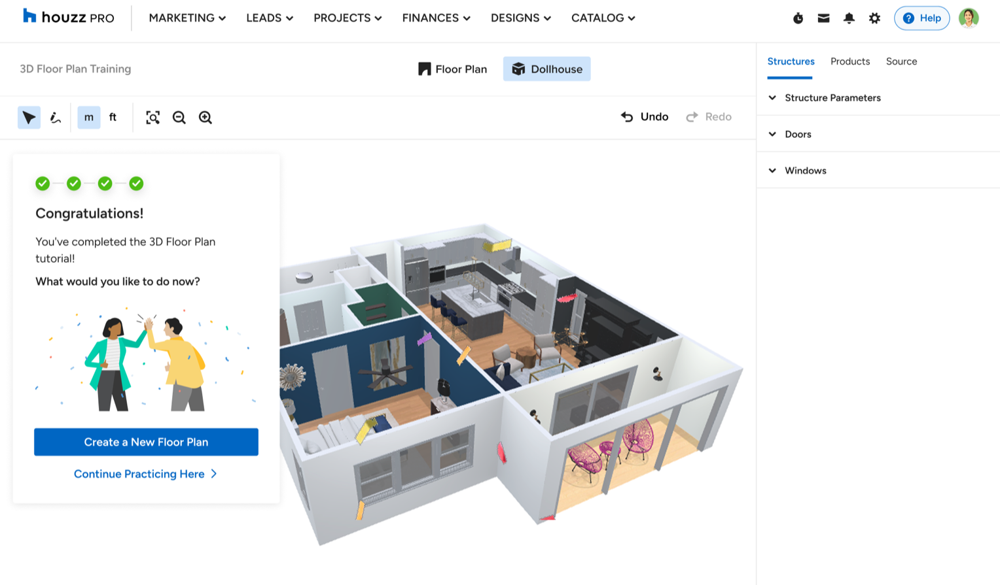
Powerful tools, no clear first step
3D Floor Plans gave pros a powerful set of tools. But for a first-time user, the blank workspace made it hard to know where to begin - they could see every feature and still not know which action to start with, how the tools connected, or whether they were doing it right.
User voices
Where first-time users got stuck
Watching first-time users, the same needs kept surfacing: a clear first step, a safe way to practice, and confidence that each action led somewhere.
“
I can see all the tools, but I don't know what I'm supposed to do first.
“
I don't know if I'm learning the right thing, or just clicking around.
“
I want to try it without feeling like I might mess up a real plan.
The insight
The challenge wasn't finding a tool. It was knowing what came next.
The friction wasn't feature discovery. Users needed a sequence - where to begin, what to do next, and whether they were on the right track.
The goal
A clear path to a finished plan
Help first-time users practice the core workflow, complete a first plan, and build enough confidence to continue on their own.
Exploration
Choosing the learning model
I explored four ways to introduce the workspace. The question wasn't just which pattern could explain the tools - it was which one could teach the workflow while users were still doing the work.
Tooltip
Good forQuick feature hints
Fell shortDidn't teach a sequence
Wizard
Good forStructured progression
Fell shortSeparated learning from the canvas
One-pager
Good forPersistent reference
Fell shortPulled users away from the work
Sidebar
Selected
Guidance stayed beside the canvas, so users could read an instruction and immediately try it in the same workspace.
TradeoffIt added persistent UI to an already dense product, and took more investment to design well.
With the sidebar chosen, the next question became what users should learn first.
The design
A guided practice space inside the workspace
The sidebar became a small practice environment inside the real product: clear enough to give users a first action, but close enough to the canvas that every step translated directly into real work.
01
Orient
Find your way
→
02
Create
Draw a room
→
03
Add items
Add objects
→
04
Review
See it in 3D
The flow
The experience, step by step
The complete path a first-time user moved through - from entry, through three guided stages, to a finished plan and back into real work.
Pro enters the dashboard→Onboarding→Greeting + short intro
01 Navigation
Floorplan mode→Dollhouse mode→Walkthrough mode
02 Tools
Selection tool · move items→Pen tool · build a room
Onboarding complete→Continue this planNew floor planHelp resources
The sequence
The four stages
The sequence builds confidence one layer at a time. Users first learn to move around the workspace, select objects, and recover if they get lost - only then does it make sense to create a room. With structure in place, adding items has a clear context instead of feeling like another disconnected tool.
The tutorial ends in 3D because Review is both validation and payoff: users see that the actions they just learned produced a coherent, spatial result. Each stage prepares the next - control, creation, detail, and finally the complete plan.
01Orient - establish control
Before asking users to build anything, we gave them a low-risk way to move, zoom, and orient, then to select and move an existing object. These actions were reversible by design - room to get comfortable before creating or changing the plan.
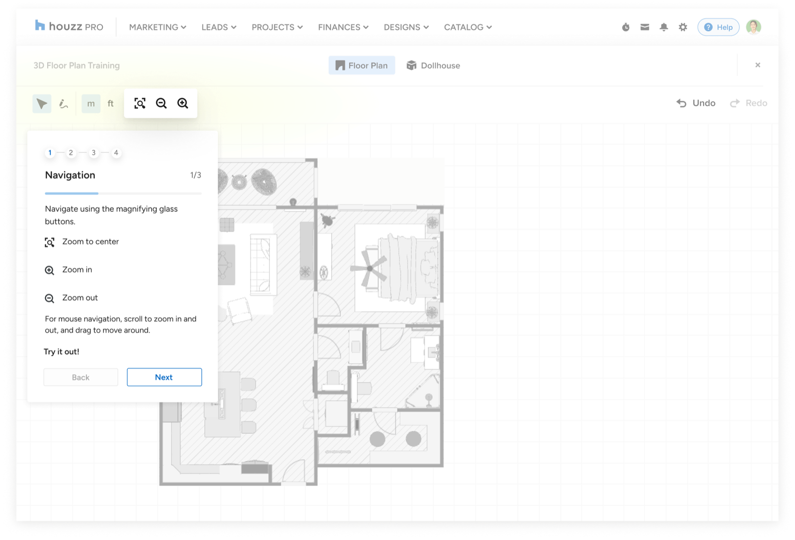
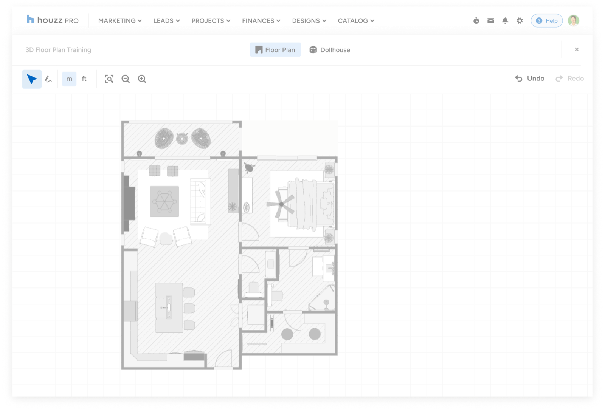
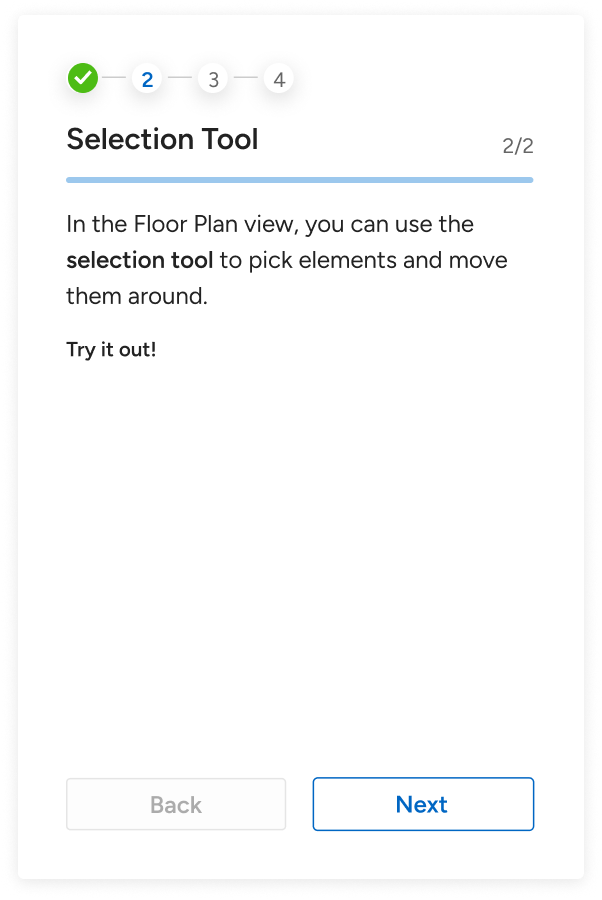
02Create - draw a room
Once users could navigate and manipulate the canvas, the tutorial introduced the pen tool and asked them to create a room point by point.
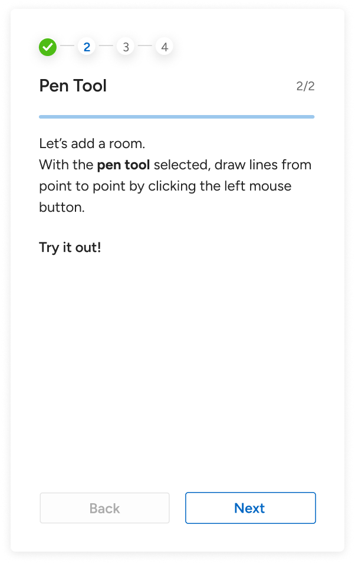
Design principle
Control first. Creation second.
03Add items - structures, products, source
The side menu unfolded in sequence: Structures for the shell, Products for quick placeholders, Source for real marketplace items. Feedback, not failure states - a misplaced item suggested a correction without blocking the user from continuing.
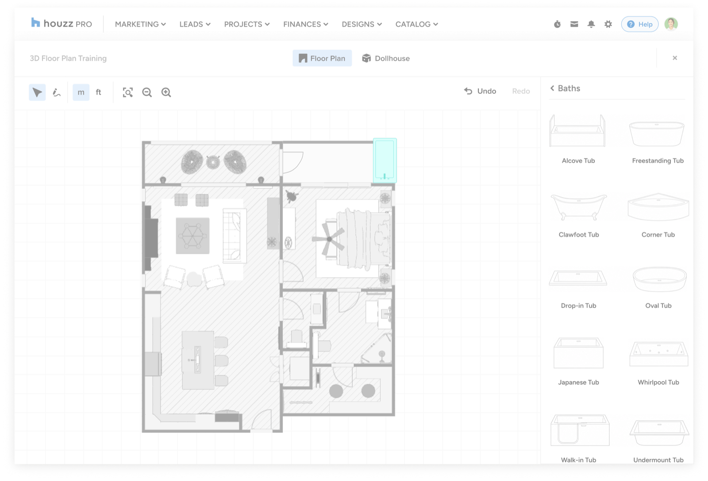
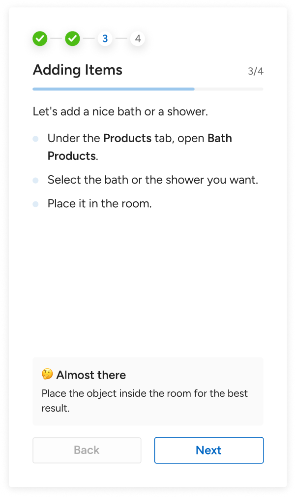
04Review - see it in 3D
After users learned the core planning actions, the tutorial introduced Dollhouse mode - turning the plan from a flat workspace into a spatial environment they could inspect and refine.
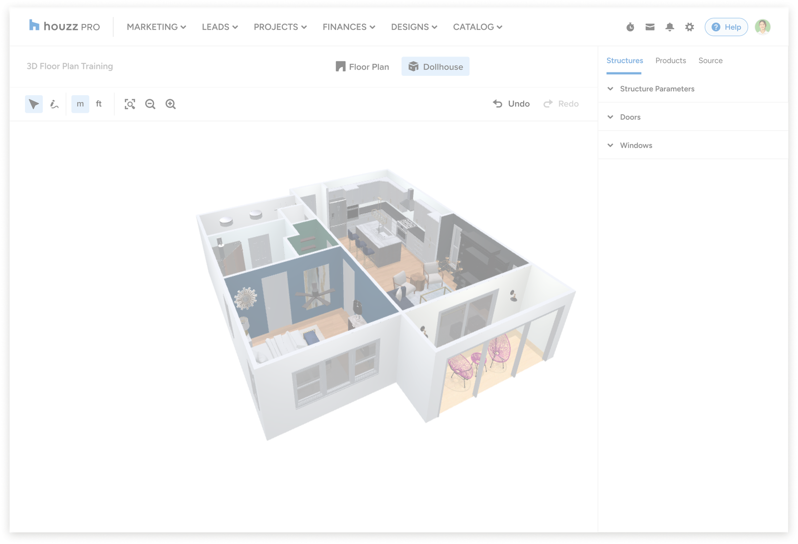
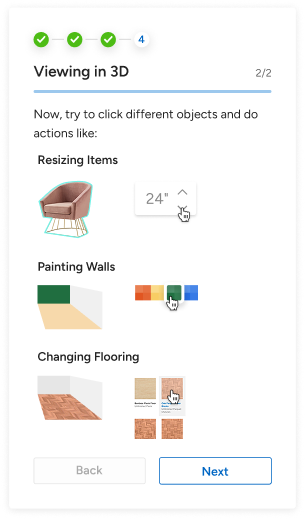
The spatial payoff - explore and refine the plan in 3D.
Design principle
Reveal the payoff after users understand the fundamentals.
In practice
Built for real working sessions
Onboarding had to fit around real work - users could pause, return, and finish without losing progress, then move from practice into the product.
Stop-and-resume. Few users finished in one session, so progress saved automatically and resurfaced on return - leave without losing progress, resume from the exact spot.
Completing the onboarding. The final step kept momentum: start a new floor plan, or keep practicing in the same workspace.
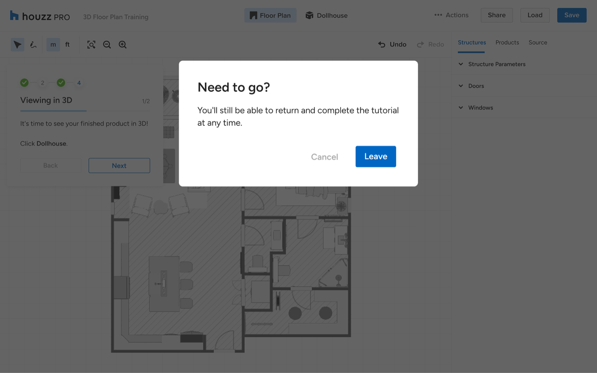
Leave without losing progress.
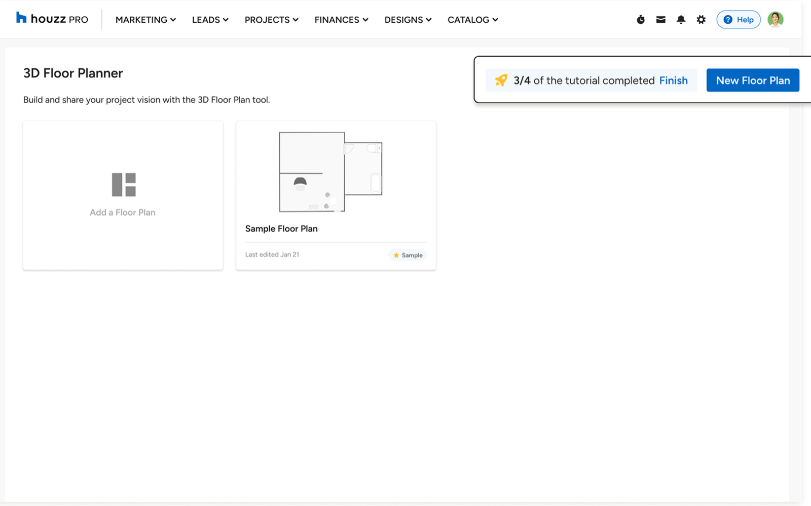
Return to the exact spot.
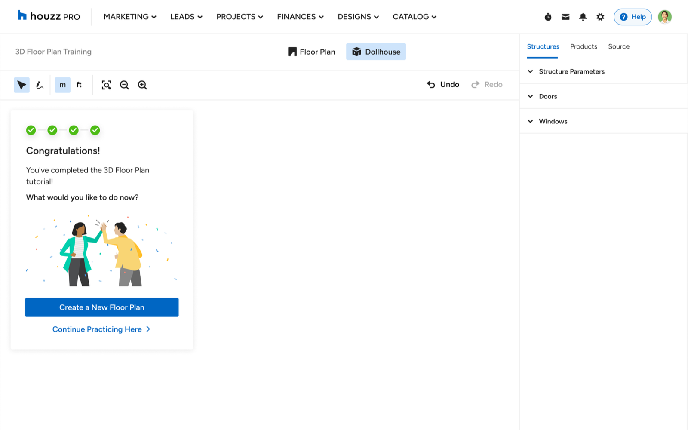
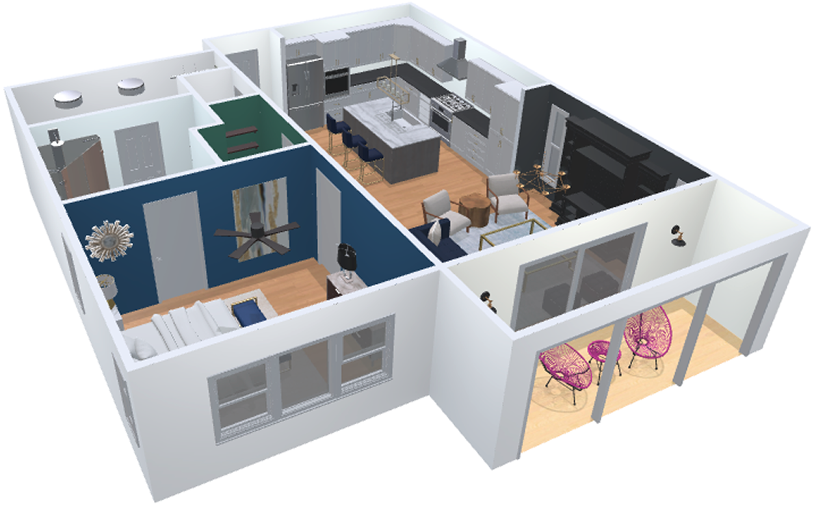
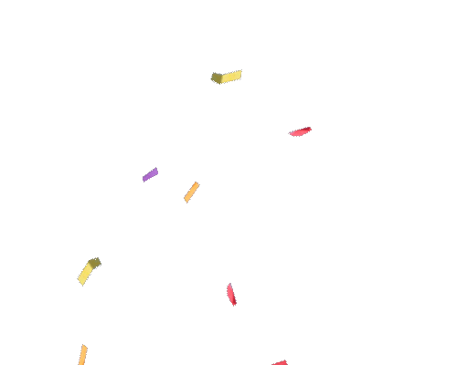
Completion that leads back into real work.
Outcome
The onboarding made the canvas feel learnable
The tutorial taught a workflow, not a list of features - gain control, create, add detail, and review the result in 3D.
Following the rollout, more first-time users reached a completed floor plan.
The result suggested the onboarding was supporting users through the early learning curve - giving them a structured path to practice the core workflow before applying it in their own work.
Learnings
What the onboarding taught me
Onboarding a complex tool isn't about explaining everything it can do - it's about giving people a clear path to one meaningful result.
01
Lead with a sequence
Onboarding shouldn't begin by explaining everything a tool can do; it should give a clear sequence of actions that leads to one meaningful result.
02
Confidence comes from doing
People build confidence by doing the work in context, seeing the effect of each action, and understanding how one step prepares them for the next.
03
Teach the shape of the workflow
Good onboarding teaches the shape of the workflow, not just the location of the tools - so users can keep working once the guidance ends.